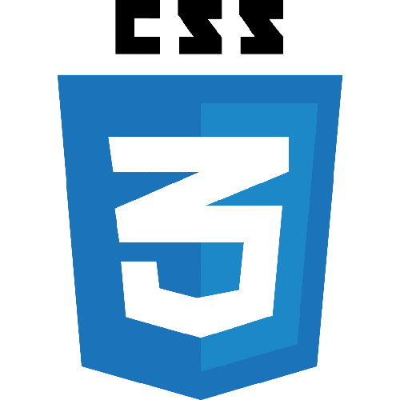
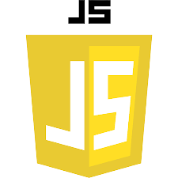
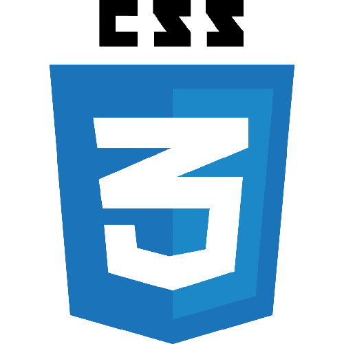
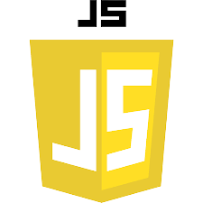

Componentes:
- Antônio Nacélio;
- Cibele Araújo;
- Glória Maria;
- Gustavo Henrique;
- Isac Leite;
- Maria Clara Dantas;
- Maria de Fátima;
- Maria Emilly;
- Maria Layana;
- Raissa Nunes;
- Victor Hugo.
O que é desenvolvimento web:
Desenvolvimento web é a área da tecnologia voltada à construção de sites, aplicativos, softwares, bancos de dados e quaisquer outras ferramentas que, de certa forma, constroem a internet como a conhecemos hoje.
Os profissionais destas áreas são os programadores, ou desenvolvedores web: pessoas capacitadas para compreender, manusear e se utilizar de linguagens de programação para construir sistemas complexos voltados ao serviço do usuário.
Dentro da carreira de desenvolvedor web temos algumas especialidades, e o estudante da área pode escolher por si só em qual quer se especializar:
- Desenvolvedor Front-End;
- Desenvolvedor Back-End;
- Desenvolvedor Full-Stack.
Linguagens usadas no desenvolvimento web:
- HTML;
- CSS;
- JAVA SCRIPT (JS);
- PHP;
- JAVA
O que é POO:
Fora de sua sigla POO significa "Programação orientada a objeto", e coniste em um dos paradigmas da linguagem de programação.
No universo de desenvolvimento de softwares acontece o mesmo que em outras áreas, a existência de diferentes caminhos para se chegar ao mesmo resultado, um desses caminhos na programação seria o POO, e outro a programação estruturada que segue um fluxo de rotina, mesmo sendo quebrada em subrotinas.
A grande diferença de POO para a programação estrutura é o fato dela usufruir de classes, herança e polimorfismo, coisa que não se ver na PE. Como dito no nome, o POO passa a orientar objetos e classificál-los.
Consideremos um carro, poderíamos programá-lo em POO, já que ele teria cores, marca e adereços diferentes de outros carros, já na programação estruturada isso não aconteceria e todos os carros teriam os mesmos atributos.
Para que serve POO:
POO exerce várias funções, porém a principal é tornar o seu projeto bem mais dinâmico facilitando a vida tanto do back-end quanto do front-end fazendo também com que seu usuário consiga utilizar seu projeto de forma cada vez mais fácil e mais acessível tornando tudo bem mas "automatico".
Podemos voltar a fazer outro exemplo, pensemos que temos uma lampâda, caso percebessemos que ela estava queimando, na programação estruturada teríamos que fazer toda uma estrutura de condições apenas para testar isso. Mas caso estivessemos usando POO para isso, bastava saber se a Lampâda estava queimada ou o seu bucal, apenas olhando seus atributos.
- Python;
- JavaScript;
- Entre várias outras.
Linguagens de programação usadas em POO:
Como surgiu nosso projeto:
O nosso projeto de Desenvolvimento Web veio de um código que fizermos em aula para que aprendessemos CRUD (Create - Read - Update - Delete). Nesse código aplicamos pela primeira vez na matéria de desenvolvimento web o POO, para que pudessemos mexer com os novos produtos que serião criados de maneira independente, pois esse é o objetivo de POO.
O intuito do site era a listagem de novos produtos dentro de uma lista no HTML, e o usuário que estivesse mexendo na listagem dos produtos poderia controla-los, apagando-os, criando novos produtos ou até mesmo editando os que já estavam na lista.
Para que todas essas funções funcionassem tivemos que aplicar com a lógica da turma o famoso CRUD, que fora de sua sigla e já traduzido ficaria como "Criação, Leitura, Atualização e Remoção", esses site poderia até mesmo ser adaptado para um site de lista de tarefas.
Projetos anteriores:
Como todo site passa por mudanças, o nosso não seria diferente, sendo refeito algumas vezes, tanto em design como em programação, mas ainda tínhamos que manter os requisitos que o professor pediu que foram:
- Ter produtos predefinidos;
- Aumentar a quantidade de produto;
- Listar produtos que foram comprados ou adicionados ao carrinho;
- Ter o total de todos os produtos.
Tendo isso em mente, começamos a fazer o site do inicio novamente, aproveitando do site antigo alguns métodos da classe que havíamos criado e também uma função que iniciava todo o layout do site.